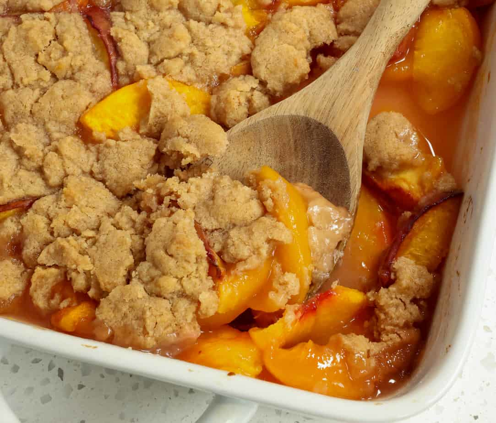

Peach Cobbler

Description
Southern peach cobbler recipe that is delicious and easy and a lot of fun to make.
It uses canned peaches so it can be enjoyed even when there are no fresh peaches available.
Ingredients
For filling:
- 1 can of peaches
- 50g sugar
- 55g brown sugar
- 1 teaspoon of cinnamon
- quarter of a teaspoon of nutmeg
- 2 tablespoons of lemon juice
- 2 teaspoons of vanilla extract
For pastry:
- 270g flour
- 100g sugar
- 110g brown sugar
- 2 teaspoons baking powder
- 1 teaspoon of salt
- 170g unsalted butter
- 125ml milk
- extra cinnamon
Steps
- Preheat your oven to 200C. Cut up butter into the baking dish that the cobbler will be baking in, and place the dish into the oven to melt and become bubbly.
- Mix all of the pastry ingredients in a bowl and set it aside.
- In a separate bowl, mix all of the filling ingredients and set aside as well.
- While making the filling and the pastry, keep an eye on the butter in the oven, since you want to make sure it doesn't burn by the time you're done prepping.
- When the butter is all melted and bubbly and really hot but not burned, pour the pastry mix over the butter. DO NOT STIR!
- Use a spoon to pour the filling relatively evenly on top of the pastry. If there are any extra juices from the peaches in the bowl where the filling was, pour those on top too. NO STIRRING! For real.
- Sprinkle some extra cinnamon on top, and bake for 25-35 minutes. You do not want the batter to be raw, but how well done and golden you want it to be is up to you.
- It is a good idea to serve it with vanilla ice cream, especially while still warm. Enjoy!